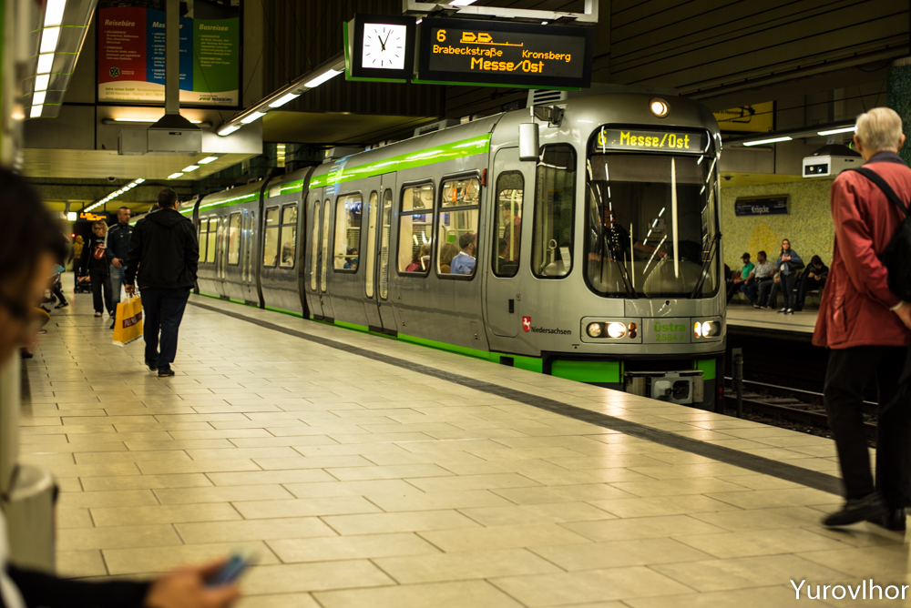
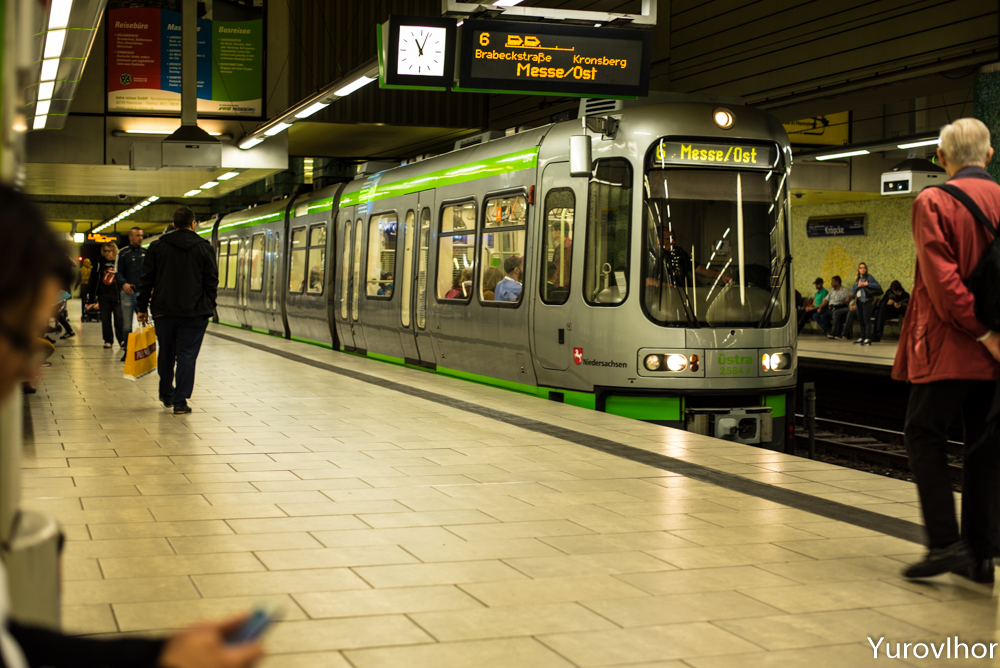
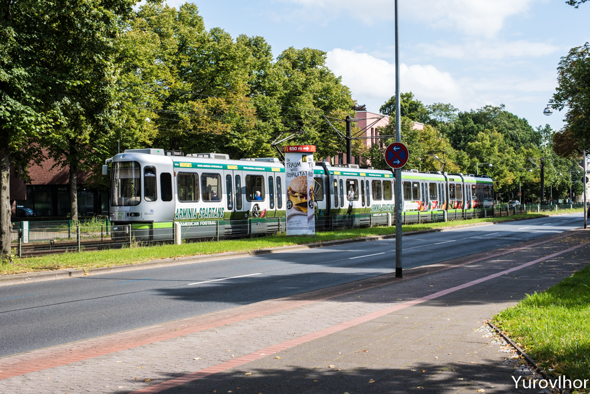
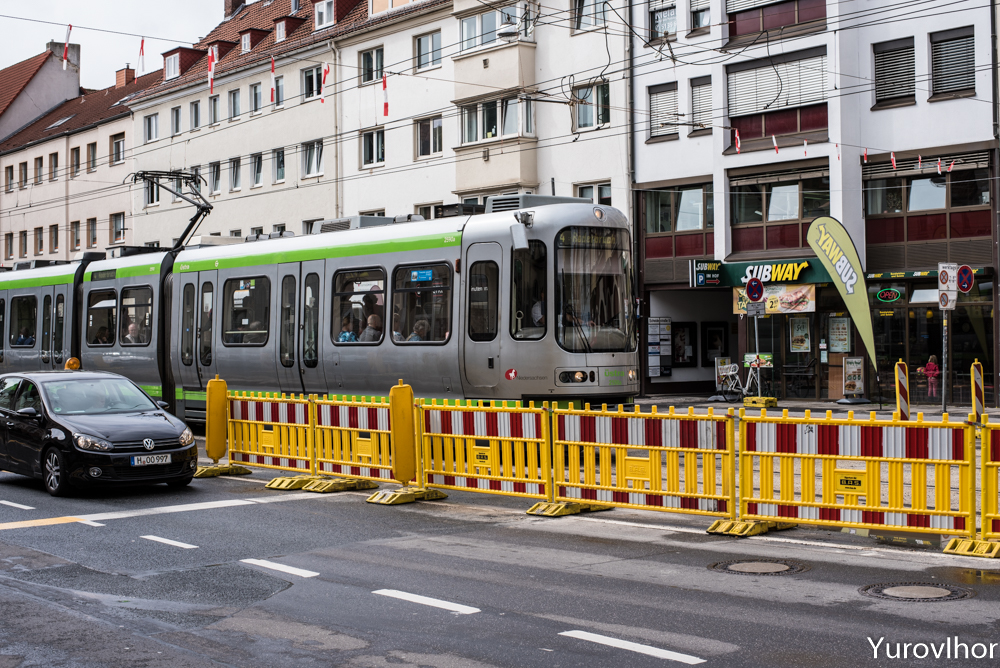
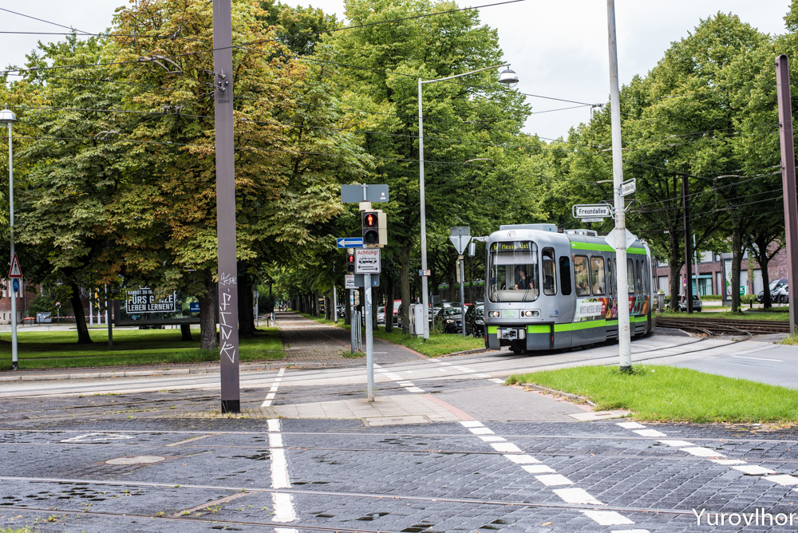
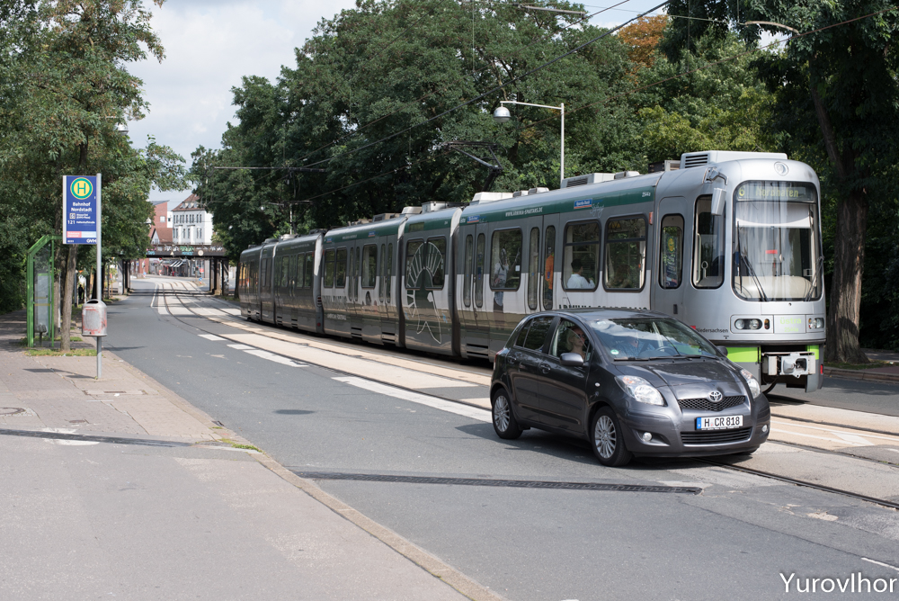
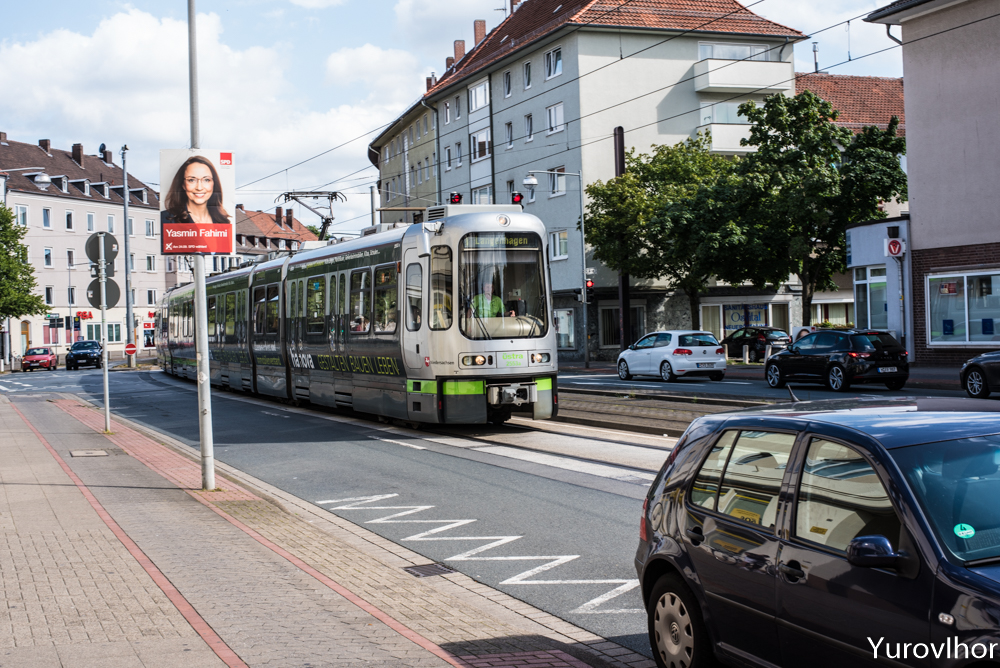
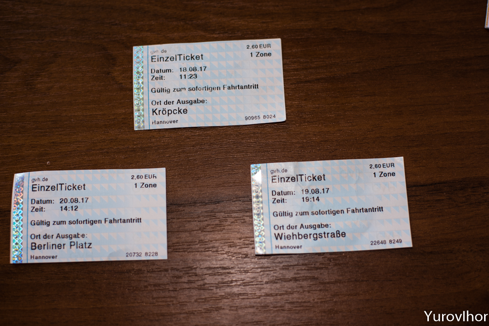
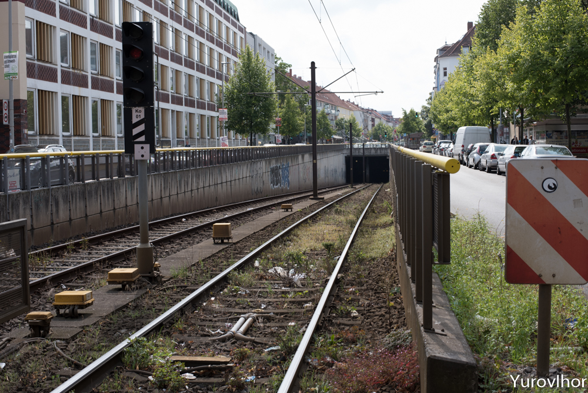
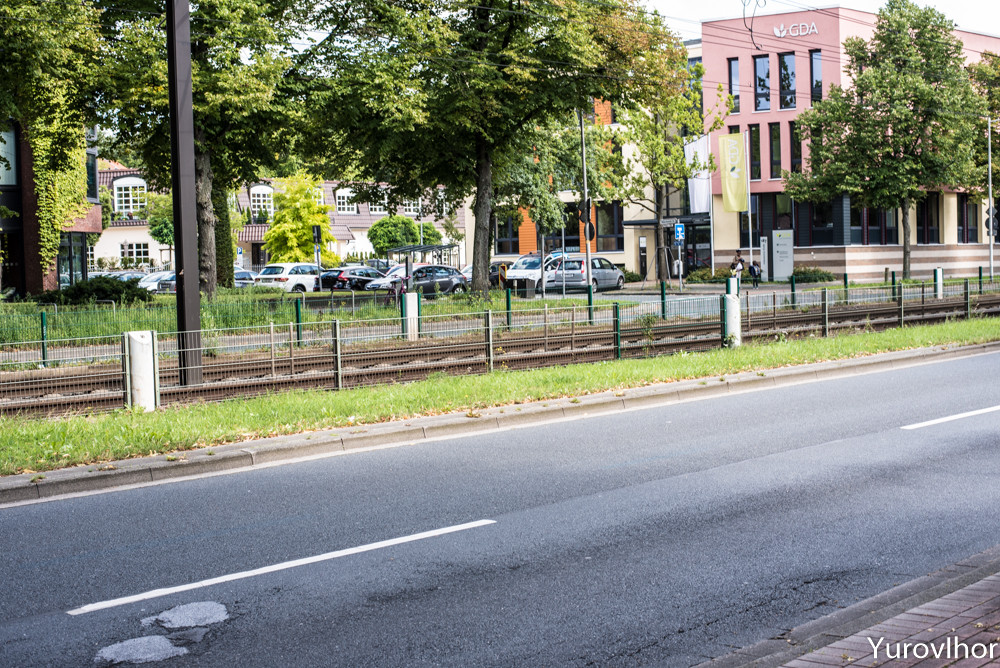

Что же все-таки это - скоростной трамвай или метро? Часть вторая. (Ганновер)
24/08/2017
Вторая и третья серии трамваев в Ганновере, эксплуатирующихся сегодня, это TW2000 и TW2500. Они получили от местных жителей прозвище SILBERPFEIL, что означает “серебряная стрела”. Теперь вместо полностью зеленой окраски осталась зеленая полоса. Их начали поставлять в город с 1997 по 2000 годы. И связано это было с подготовкой к важному событию города, к международной выставке ЕХРО 2000, которая к слову, оказалась провальной и убыточной. Размер убытка этой выставки составил порядка 1,2 млрд. евро. Но речь не об этом.
 

К 2000 году было куплено 144 единиц этого трамвая, из которых 108 штук были в лизинге. Основная разница между TW 2000 и TW 2500 заключается в том, что TW 2000 имеет два направления движения, а TW 2500 только одно, т.е. в одном вагоне есть только одна кабина управления для водителя, поэтому эксплуатироваться они могут исключительно парами. У этих моделей 54 сидячих места и 105 стоячих мест. Длина вагона TW 2000 составляет 25,82 метра, TW 2500 немного короче, длина у него 24,79 м. Ширина у обоих 2,65 метра, что на 25 см больше чем у предшественника TW 6000. Есть незначительная разница в массе, так TW 2000 весит 39850 кг а TW 2500 немного меньше 39050 кг. У них по шесть осей, тогда как у 6000-ной было их восемь.
Разработана модель TW 2000 была британцами, дизайнером Джаскером Моррисоном и профессором Гербертом Линдингером. Разработана даже система видео наблюдения для защиты от вандализма. Бесполезная информация стирается каждые 24 часа.
  У них тоже есть опускающиеся ступеньки от кнопки, а вот уже последняя серия трамваев TW 3000 не имеет ступенек и используется только с платформами.
И наконец, самая последняя модель, которую начали выпускать и поставлять в Ганновер с 2013 года - это TW 3000. Один такой трамвай стоит порядка 2,5 млн. евро. Первый приехал в город 16 ноября 2013 года, но были обнаружены дефекты с сварными швами. Первая презентация состоялась 15 марта 2015 года. Город планирует закупить 146 штук. Постепенно данная модель заменит старенькие TW 6000. Размеры как и в TW 2000. Ширина 2,65 и длина около 25 метров. Как и в TW 2000, в салонах установлены мониторы с помощью которых можно отслеживать остановки, что помогает не заблудиться. Кроме инновационной системы отопления, вентиляции и кондиционирования воздуха, встроенными ударопоглощающими элементами для повышенной безопасности пассажиров, в салоне есть подсветка, излучающая три разных света: теплый желтый для холодной погоды, прохладный синий во время жары и успокаивающий зеленый.

Фото взято с сайта www.uestra.de
Данная модель использует на 15% меньше энергии чем предыдущая, что делает ее более экономичной. Также здесь нет опускающихся ступенек, что также снижает стоимость производства и обслуживания. По этой причине она может использоваться только с платформами для посадки. Что еще интересного? Огромные окна и плавающие сиденья, тонировка окон и дверей. Длина вагона 25160 мм, высота 3750 мм, ширина 2650 мм. Масса нетто 39,8 тонн. Скорость у всех 80 км/ч. Стоят 4 электродвигателя (4х125 kW). Количество сидячих мест 54+113 стоя. Напряжение 600-750V и 730 мм диаметр колеса при стандартной ширине колеи в 1435 мм, высота пола от верхнего края рельса 860мм. Ой, сколько технической информации, ну так это ж интересно, разве не так? :)
Так выглядят местные билеты на проезд в метро.
В завершении темы хочется вернуться к главному вопросу, что же все-таки это - трамвай или метро? Организаторам данной транспортной системы, удалось сделать своего рода гибрид, а именно объединить в одно целое и скоростной трамвай и метро. Дело в том, что в центре города вы нигде не увидите на улицах трамвай. Из 198 существующих в Ганновере станций, 19 станций находятся под землей. Это и есть центр города. О станциях расскажу в следующий раз. Дальше от центра есть такие переходы, как на этом фото, где из метро появляется трамвай и дальше едет по поверхности как трамвай. Таким образом центр города разгружен от лишнего транспорта и метро работает само по себе независимо. Вот так. Кстати, общая протяженность 12 линий составляет 127 км и насчитывает парк из 309 единиц.
Продолжим...
